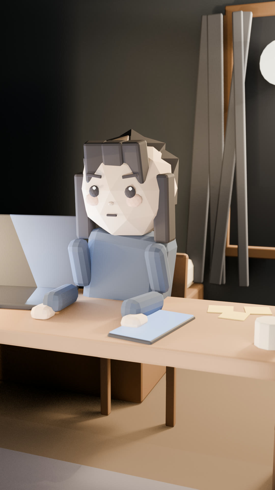
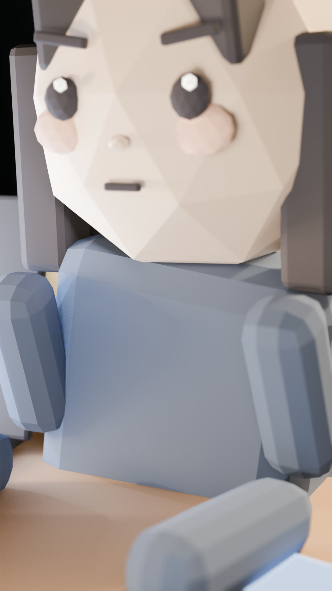
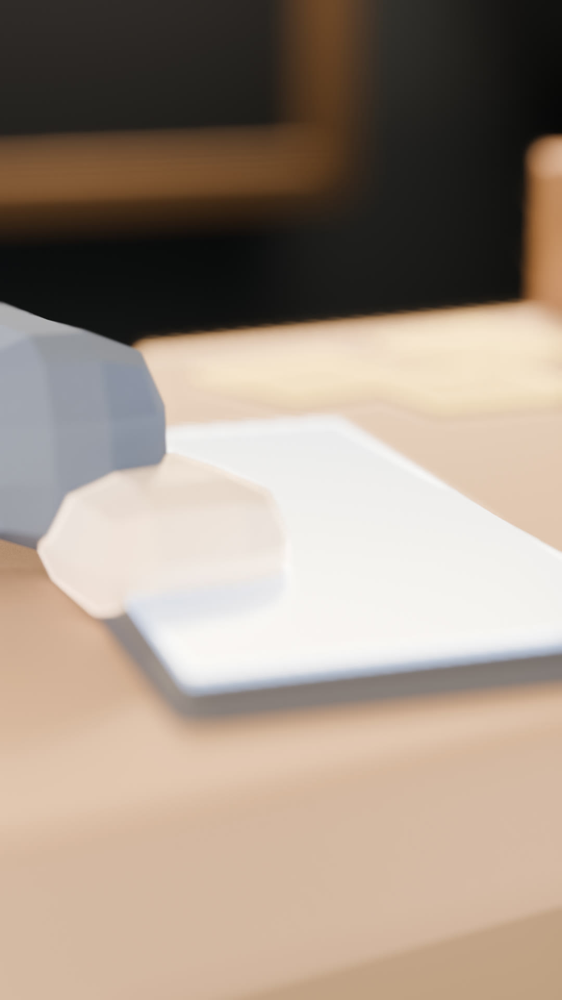
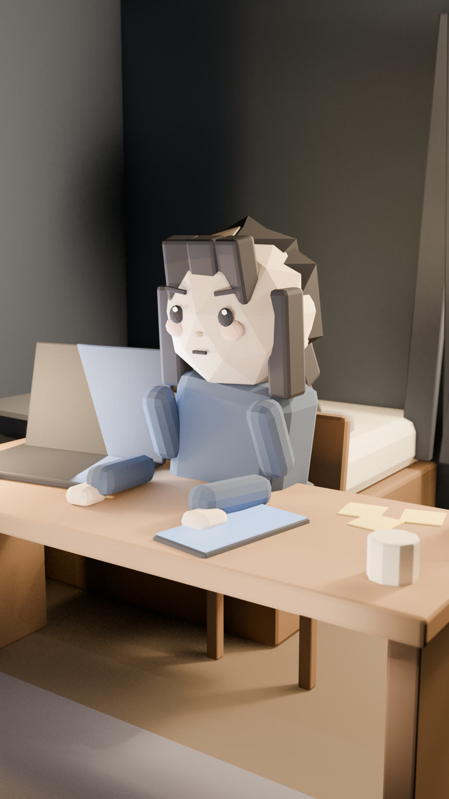

1 0:00–0:06 Kamar malam

Blender still · 40mm VO: “Cari kerja itu nggak seharusnya jadi kerjaan kedua.”
Satu lampu meja jadi sumber hangat, jendela memberi rim dingin. Tirai bergoyang 4 detik loop, kamera push-in 5%.
2 0:06–0:13 Kekacauan

Blender still · 58mm VO: “Screenshot di galeri. Link di DM. Semua disalin ke spreadsheet, dan tetap nggak kelihatan mana yang harus dikejar dulu.”
Di atas close-up ini menempel tiga potongan 0,9 detik: galeri penuh poster, DM berisi link mentah, spreadsheet 9 pt dengan #REF!. Mata menyipit di potongan terakhir.
3 0:13–0:18 Notif teman

Blender still · 68mm VO: “Sampai temanmu kirim satu link.”
Notif “coba sloe.my.id” masuk 0,4 detik setelah cut. Layar HP satu-satunya sumber cahaya dingin di frame.
4 0:18–0:27 Scan poster
Add a job
Upload poster · paste link · type it
Company
Lumino Studio
Role
Social Media
Location
Jakarta · Hybrid
Deadline
12 Dec 2026
dibaca dari poster
Reading the poster… 3 of 4 fields
Save job
1 poster = 0 typing
VO: “Upload posternya. Sloe baca sendiri: perusahaan, posisi, lokasi, deadline.”
Layar mengambil alih frame (tanpa bubble). Garis scan 0,8 s, field terisi berurutan 0,25 s.
5 0:27–0:33 Kacau jadi jelas
Jobs
5 saved · 2 this week
Lumino Studio
Social Media Intern · Jakarta
Applied
12 Dec
Kopi Senja
Community Intern · Bandung
Interview
30 Dec
PT Nusakarsa Data
Data Analyst Intern · Remote
To apply
5 Jan
Bumi Retail
Supply Chain Intern · Jakarta
Rasa Raya
Marketing Intern · Yogyakarta
+ Add job
satu papan, bukan tujuh tab
VO: “Satu tempat, rapi. Dan kelihatan mana yang harus dikejar dulu.”
Grid spreadsheet dari adegan 2 memudar ke kartu warna; kartu masuk stagger 6 frame.
6 0:33–0:40 Match score
Lumino Studio
Social Media Intern · Jakarta
87%
match with your CV
Portfolio cocok: 3 proyek sosial media
Pengalaman organisasi sejalan
Tool yang diminta belum ada di CV
What to improve
1. Tambahkan Canva & Meta Business Suite
2. Sebut angka: engagement +18%
3. Kirim sebelum 8 Des (ramai pelamar)
3 saran konkret
Write the email
VO: “Cek dulu cocok atau nggak. Delapan puluh tujuh persen — plus tiga hal yang bisa kamu perbaiki.”
Cincin mengisi 0,9 s. Tiap alasan muncul 8 frame setelahnya.
7 0:40–0:47 Email ke HR
Write with AI
Email to HR · from your CV and portfolio
Email to HR
Professional
Medium
Subject: Application — Social Media Intern
Dear Hiring Team at Lumino Studio,
Saya Alyssa, mahasiswa tingkat akhir yang
sudah mengelola akun kampus 12 ribu
pengikut dan menaikkan engagement 18%.
Dari portofolio saya, kampanye “Senja di
Kampus” mencapai 240 ribu tayangan…
✓ from your CV
✓ from your portfolio
2 fakta dipakai, 0 dikarang
Send to HR
Also uses: cover letter, follow-up,
thank-you email, LinkedIn bio
3 gems per AI action · free plan 10 a month
VO: “Surat yang benar-benar nyambung sama CV dan portofoliomu. Tinggal kirim.”
Teks mengetik 22–28 karakter/detik; chip hijau muncul saat kalimat yang memakai fakta CV selesai.
8 0:47–0:53 Grup
Groups
Share the list, not your CV
Finance Interns 2026
Created · you are the owner
F1N26A
Finance Interns 2026
Code F1N26A · 4 members · 11 jobs
Lumino Studio · Kopi Senja · Nusakarsa
Bumi Retail · Rasa Raya · +6
NA
RA
DI
SA
+3
“ada yang mau apply Nusakarsa?”
“deadline-nya 5 Jan, aku udah kirim”
obrolan grup · 3 pesan baru
Join with code
Create group
Free: 2 groups · 10 joins
Plus: 10 · 30 Pro: unlimited
VO: “Dan kalau lowonganmu banyak, bagi ke grup. Satu kode, seisi kelas dapat.”
Kode muncul dengan scramble 300 ms, lalu avatar teman pop satu per satu.
9 0:53–0:58 Penutup

Blender still · 40mm VO: “Sloe. Biar kamu fokus melamar, bukan merapikan.”
Lampu naik sedikit, tirai masih bergoyang. Kartu logo masuk 12 frame terakhir: sloe.my.id · free to start.
Gaya (dari referensi)
Lampu
Kamera
VO Indonesia